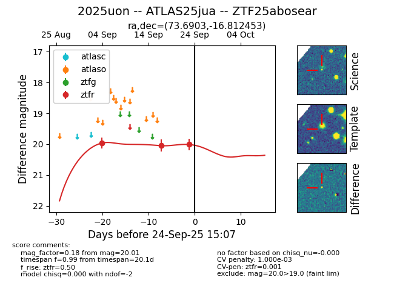

FINK: ZTF25abosear
Lasair: ZTF25abosear
ALeRCE: ZTF25abosear
TNS: 2025uon
YSE: 2025uon
ZTF25abosear (ztf,fink)
2025uon (tns,yse)
ATLAS25jua (atlas)
equatorial (ra, dec) = (73.6903,-16.81245)
galactic (l, b) = (215.9915,-33.16957)

last ztfr=20.05
2 ztfr detections